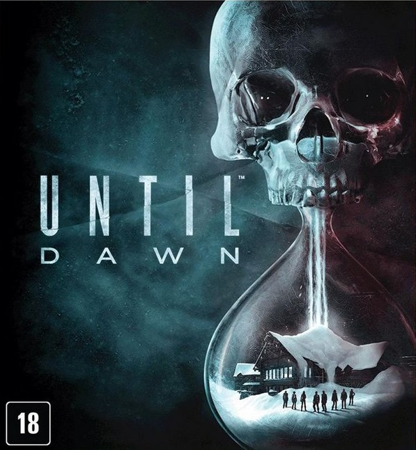
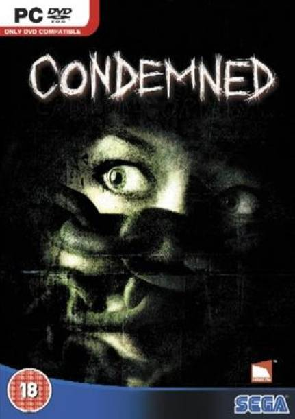
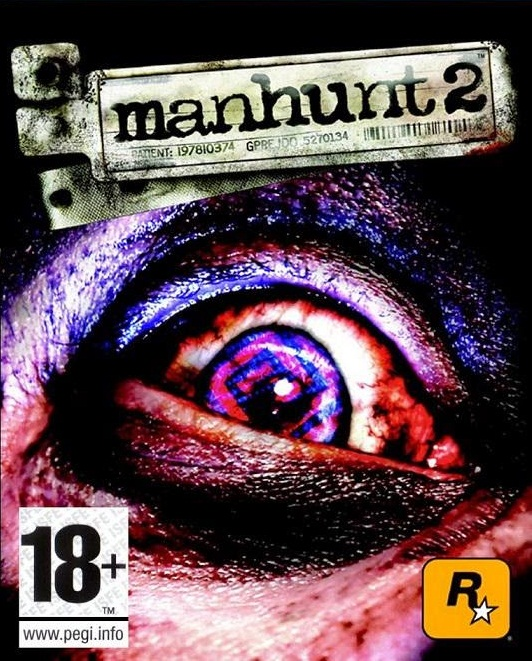
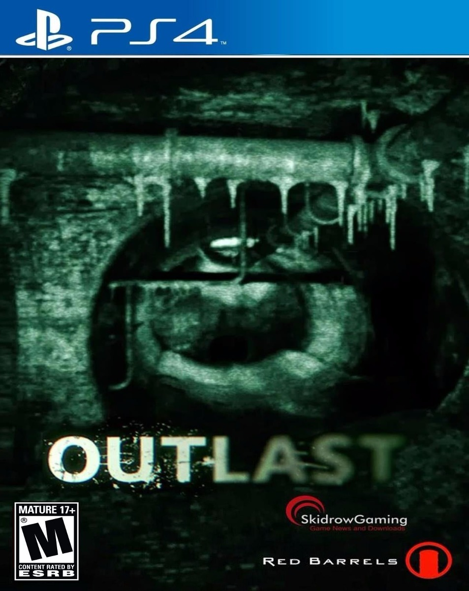

Agony es un videojuego survival horror desarrollado por Madmind Studio y publicado por PlayWay, para las plataformas PlayStation 4, Xbox One y Microsoft Windows. Los jugadores comienzan su viaje como un alma atormentada dentro de las profundidades del infierno sin recuerdos de su pasado. La capacidad especial de controlar a las personas en su camino, e incluso poseer demonios de mente sencilla, le da al jugador las medidas necesarias para sobrevivir en las condiciones extremas en que se encuentran.1 El juego ha tenido su lanzamiento el 29 de mayo de 2018.2
Categoria horror

Unti Dawn
Descripcion
Until Dawn es un videojuego narrativo de los géneros survival horror y drama interactivo, desarrollado por Supermassive Games y publicado por Sony Computer Entertainment, para PlayStation 4.1 Fue originalmente programado para ser lanzado en la consola de PlayStation 3, pero en agosto de 2014, el juego fue re introducido como exclusivo para la PlayStation 4. 2 Fue lanzado el 25 de agosto en Norteamérica y el 26 de agosto de 2015 en el resto del mundo.3
Until Dawn generó una respuesta positiva de la crítica después de su lanzamiento, con elogios dirigidos a los niveles gráficos visuales, a la elección mecánica del juego, a sus elementos de terror, la música, la actuación, voces y diseño de juego. La mayor parte de las críticas que el juego atrajo fue referente a la historia, sobre todo la segunda mitad, los ángulos de cámara, movimientos de los personajes y la trama parcialmente lineal.
Categoria horror

Condemned
Descripcion
Condemned: Criminal Origins es un videojuego desarrollado por Monolith Productions y publicado por Sega para Xbox 360. Fue lanzado el 15 de noviembre de 2005 en Estados Unidos, y el 2 de diciembre de 2005 en Europa, donde es conocido simplemente como Condemned. Una versión fue lanzada para PC el 11 de abril de 2006. Han aparecido rumores sobre una posible salida para la consola PlayStation 3, pero no ha sido oficializada.
Categoria horror

Manhunt 2
Descripcion
Manhunt 2 es un videojuego del género Survival horror, desarrollado por Rockstar Games y secuela de Manhunt. El juego fue programado para ser lanzado en Wii, PlayStation 2 y PSP en julio de 2007, pero fue aplazado por Take-Two Interactive debido a un pequeño fallo y rechazo en la clasificación del juego en el Reino Unido y una clasificación AO (Adults Only, Solo Adultos) en el ESRB en Estados Unidos, sepultando toda posibilidad de que el juego fuera lanzado debido a que Nintendo, y Sony, como parte de su política, no permite que juegos con esta clasificación sean vendidos para sus respectivas consolas.5 Posteriormente, Rockstar Games realizó una modificación al juego, suavizando su nivel de violencia, consiguiendo que este fuera finalmente clasificado M (Mature), lo que les permitió lanzarlo el 29 de octubre de 2007 en Norteamérica y el 31 de octubre de 2007 en Europa. Luego de un largo litigio el juego es finalmente lanzado en el Reino Unido, con la temida clasificación de +18. La versión PC salió sin censura el 6 de noviembre de 2009 a través de la descarga de Direct2Drive exclusivamente para Norteamérica con una clasificación AO por parte de ESRB.647
Categoria horror

Outlast
Descripcion
Outlast es un videojuego de survival horror en primera persona desarrollado y publicado por Red Barrels Games, una compañía fundada por antiguos miembros del equipo de desarrolladores de otros juegos como Prince of Persia, Assassin's Creed, Splinter Cell y Uncharted.1 Outlast fue publicado el 4 de septiembre de 2013 para la plataforma Microsoft Windows y posteriormente para Xbox One, PlayStation 4 y el 31 de marzo de 2015 para Linux y OS X. Fue lanzado para Nintendo Switch el 27 de febrero de 2018.s